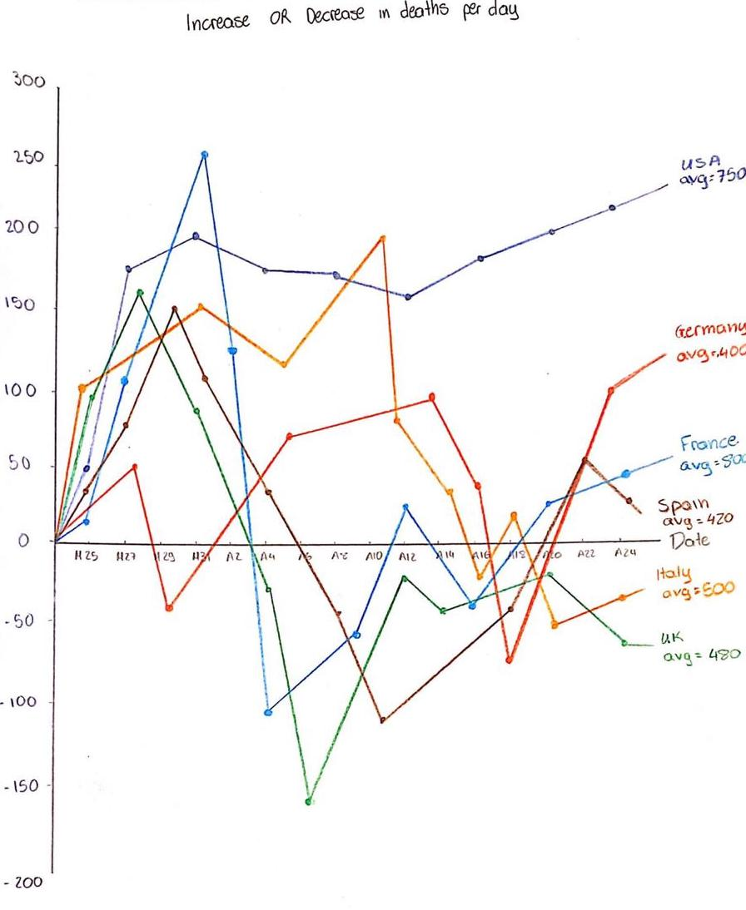
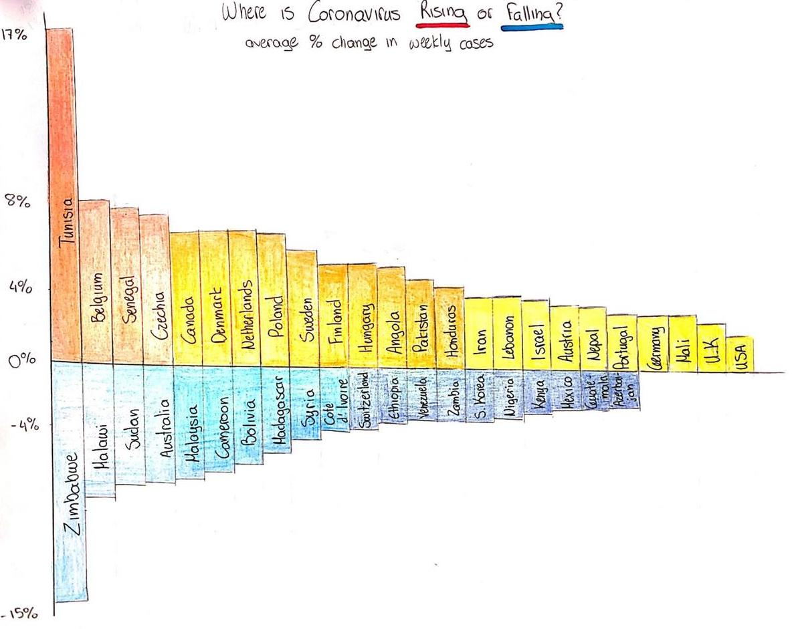

MINI PROJECT 1
Good examples
The audience who would look at this graph is probably people who have interests in learning about online gaming and the general information and statistics of this now multi-billion-dollar industry. The visualization does more than just showing data as it goes into details about presenting the history of the industry, highlighting events that shifted the landscape, the major contributors, the current environment consisted of PC, Console and Mobile gaming, and a look at the future development. Of course, besides using words, many claims and facts are backed up by real data in the forms like bar chart, pie chart and stacked bar chart. These types of visualizations are great for comparisons, whether it is between sub-categories or the same variables across time, which would, along with the use color coding, provide the necessary information that a reader can easily pick up such as the extremes of trends.
In terms of the five principles, this graph satisfies all of them: It does not hide or alter data and credits all sources, all the graphs within use the most effective design to achieve the main purpose, the entire visualization is clean and everything is spaced out, the accompanying words explain the graphs and data in detail and highlight the facts that we should understand and after reading the infographic, we will essentially finish a crash course on the online gaming industry knowing its past, present and future, which can inspire different conversations and further research.
This visualization is a good visualization of the tallest buildings on every continent. The audience is anybody interested in tall buildings and the comparisons between them around the world. The reader does not require any prior experience with data visualizations to be able to read and understand this example. The visualization introduces the questions of where are the tallest buildings, how tall are they, when were they built, and how do they compare to each other. The location of the buildings is indicated on the map while the depictions of the buildings below the map give more information about the exact location, height, year of build, and name of the building. The data encoded is quantitative data of the height of the buildings, as well as categorical data of which continent they are located in. The readers are able to identify the extremes and compare the values of the height of the buildings around the world. It is easy to see which continent has the tallest buildings and which the lowest, but the reader can not identify any trend in the distribution of the tallest buildings
Truthful—Graphical integrity The visualization appears to be truthful, the data are shown in a way that no Functional — The goal of this visualization is to show the locations and height of the tallest buildings for each continent. This visualization achieves this goal in a clear and comprehensive way. As the location is evidently shown on the map, and the height of the buildings on the comparison below the map, the visualization appears to be functional. Beautiful— It is beautiful in a way that it shows the data with interesting designs. Instead of having a bar chart to compare the height of the buildings, they are using small depictions that make it more esthetically pleasing without overdoing it. Insightful — The data provides insightful information about the data depicted. A reader can easily extract the most important/tallest buildings for each continent. Enlightening— The categorization of the buildings according to continent provides more enlightening conclusions to the readers. We can clearly see the differences across the continents instead of just the height difference. For example, it is evident that Africa has way shorter buildings than any other continent
Following the five principles, as well as all other aspects of this visualization, it appears to be doing an excellent job. It is a good visualization, beautiful, insightful, and comprehensive by an average reader.
This is not a typical data visualization, nor is this a typical blog for typical people. Having stumbled across this blog post, I would say that its audience is mostly towards cs engineers, due to the extensive coding and math incorporated. The visualizations here, as I should point out, are all computer generated after the user uploads a photo of banana and bread slices. The ensuing visualization conveniently answers the question of how to optimally cover a slice of bread with banana slices without skips (skipping a slice). Each slice of banana is designated a unique color and number that increases by one for each slice cut. The user actually interacts with the data itself, for the user is responsible for taking and uploading the original photo of a bread slice with the whole banana. After retrieving the optimal coverage visualization from the python program, the user then proceeds to cut the banana into slices as shown by the diagram to achieve maximum coverage!
With regards to the five principles of visualization, this program comfortably achieves all: The program doesn’t distort the image of banana or bread, nor does it produce falsified information; It is highly functional, as it solves a commonplace mystery of optimal banana slices placement in a sandwich; The colored layer is also beautifully drawn(generated) to distinguish different banana slices; It is self explanatory that this is an insightful visualization, since who else would’ve gone this far into one of the most routine breakfast tasks; The science behind this program is also deeply enlightening to those interested, as it referenced topics such as “Rad Coordinate Transformations”, “Ellipsoidal Assumptions”, etc.. It is difficult to judge this visualization, for there is simply NOTHING like this at all! Since good is only meaningful when there is a bad to counter it, in the absence of a second banana bread diagram, I give this one the benefit of doubt and declare it a good visualization.
Bad examples
Bad #1
Where is Coronavirus Rising or Falling?

This graph, right off the bat, is confusing and weird to be looking at for its excellent depiction of a tornado, which would immediately put off many readers who are looking for information about the average number of deaths per day in a given country. Taking a closer look at this graph, we can see that it is trying to show the effect of certain events, such as lockdown and quarantine policy, on the number of deaths caused by COVID-19. While this effect can be explained, as most countries’ lines start off by going to the right before coming back left after certain rules went into effect, it will take readers some time to decipher the meaning behind it. This has a lot to do with putting two highly correlated variables into the two axis and not to mention one of them is a 3-day moving average of deaths per day while the other one is daily increase or decrease of deaths. Moreover, the lines as well as the annotations on the graph are squeezed together, making a lot of information hard to read that may discombobulate readers, such as the lines toward the bottom of the graph and some dates next to the lines that are either invisible or situated at an angle.
Overall, while the intention for creating this graph may be good and stays true to principles like truthful and insightful, its design simply has too many flaws for it to be effective in conveying important information upfront to readers.
This visualization is illustrating the increase or decrease in the average % change in weekly cases for countries around the world. The audience is the whole population, as the Coronavirus pandemic affects everybody. The visualization is trying to convey the intensity of the cases for each country depicted. It is raising the questions of which countries are doing better or worse. This question is answered partly. It is clear which countries are experiencing an increase in weekly cases and which ones a decrease but among the increasing countries it is hard to see which are doing the best. The colors indicate that, but the circle can be confusing. The radius of the circle represents the percentage increase or decrease, but when a reader first sees the graph, he or she might get confused with the slope. The countries are organized alphabetically, so the ones in the beginning of the alphabet have a steeper slope, which looks like a greater increase, but that is not the case. The data encoded is quantitative, the percentage increase or decreased in weekly cases per country.
The readers can easily identify the extremes, once they have comprehended the structure of the visualization. The longest the line, the greatest the increase or decrease. However, it is difficult to make comparisons between countries, as some lines overlap with each other making it hard to distinguish the different countries. Truthful - The data indicates clearly the increase or decrease in the cases, but as it is confusing to identify the extent of that increase the visualization is not absolutely truthful. The ambiguity with the slope of the lines and the length, about which one represents the % change, could be misinterpreted. Functional - As the different lines overlap in some countries, it is hard to distinguish them making the visualization less functional. Beautiful - The visualization is actually very impressive and beautiful. The half-circle shape is innovative and the colors help with the distinction between an increase and a decrease in average weekly cases. Insightful - The visualization is insightful for the reader that has understood its structure. He or she can identify the countries with a tremendous increase or decrease in cases and the colors also help with that task. However, it could be confusing for some other readers. Enlightening - The ambiguity of this visualization makes it difficult to decipher the message its trying to convey to the readers. So, it is not enlightening.
Based on these five criteria, this visualization is beautiful and functional for readers with some prior experience with data visualization, but it can be confusing for the rest.
Anyone who would be looking at the graph cares about the damage that wildfire has done to the land and citizens of California and would like to get more information on just how severe each was. The graph certainly brings out the feeling that would match the data behind it–fire. With the red squares, especially the larger ones, could allow one to envision the fire burning in the Californian forest to a point where the entire sky turns red, which is enlightening and disheartening at the same time.
However, it does not hide the fact that the graph does nothing more than conveying the severity of the wildfire. This graph, which looks like a variation of a stacked bar chart but instead it stacks the bars over each other, is chaotic to look at. The most obvious flaw is that it would not be for readers to get a sense of exactly how many acres were burned in a specific month/incident. For the months with only a few squares, it might be doable to come up with an estimation but for months like July and August where fires raged on, it is impossible to count up all the overlapping squares and estimate their sizes for a number. Some squares are even too big so that they would cover up the squares above them. Also, it would be hard to compare the scale of the fire across months and years for exactly the reasons aforementioned.
These details show that the graph is neither beautiful nor functional. Moreover, the designer expects the readers to spend a substantial amount of time looking at the graph to come up with a rough estimate but this practice is ineffective and will only drive people away from wanting to dive into the specifics of the data. Overall, there are many aspects of this graph that could be improved to give readers a better perspective on the California wildfires.
Resketches
Best Resketch for Bad #1
Our best redesign is what we envision a graph with the types of data provided to look like. It is a simple line chart with different colored lines representing different countries. For each date, there is a data point for each country of the number of new deaths. It is very clear to the readers of the trend in terms of the change in the number of deaths for each country as time went on and it does not have additional elements that would obstruct the reader's view of the lines. By doing so, however, we would be giving up an aspect of the original graph in the events that might have alternated the trend for a country. Moreover, we no longer have the 3-day moving average of the number of deaths, which the original graph’s designer may have used to consider a delayed effect on policies for the number of deaths to drop. Nonetheless, these problems could be solved if we add JavaScript and interactivity to it on a website. When a user hovers over a specific date for a country, we could display the average number of deaths in a pop-up box as well as any major event that may have happened on that date along with links to new articles reporting the full story. We could also allow the user to select a country so that only one line is displayed in color while the other ones turn into grey lines in the background. All in all, we believe that the redesign is a major step-up from the original graph in terms of being functional and insightful for presenting the information in a clear fashion.
Best Resketch for Bad #2
The audience is the same as the original design, everybody. The main purpose of this visualization is to show which countries are experiencing increases or decreases in the average weekly cases. The data encoded is again the % change of cases for each country, however the increase or decrease is represented with a bar instead of a line. The redesign allows the reader to identify the extremes more easily than the original design and it also allows comparisons. Contrary to the original design the redesign is sorted in a decreasing order making comparisons more clear. The vertical axis is the average %change of cases, and the bars above the horizontal line represent the countries that have experienced increases in cases, while the bars below the horizontal line represent the ones that have decreasing number of cases.
Truthful - The redesign is truthful, as the values of the increase or decrease are clear on the vertical axis, and the bars are clearly distinguished. Compared the the lines on the original design that overlap. Functional - The visualization is functional. It achieves the goal of informing people about the changes in coronavirus cases effectively. The redesign is simple but straightforward. Beautiful - The sorted bars, and the gradient colors make the redesign beautiful and more organized than the original design. However, it is way more simplistic than the original design. Insightful - The visualization gives insight on the data that is depicted very effectively. Each country’s increase or decrease is clearly indicted, both by the color and the height of the bar. Enlightening - The reader viewing this design can clearly see the progress of each country. It is in a way enlightening, but as the data for total cases is not included in the visualization there is room for improvement.
According to those principles, the design is relatively good. It might appear to be very simplistic, but as the data is not complicated, more sophisticated design might not be effective in conveying the message of the visualization. The redesign is more efficient than the original design for that exact reason. A more simplistic visualization is better n this case.